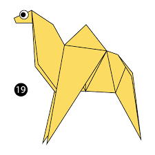

Origami Designs and Diagrams

About us
Follow us
Camel
1. Camel's ears are furry
2. Camel can move easily across the sand because of its specially designed feet
3. When they find water,they will drink as possible
 Chameleon
1. Chameleons are reptiles that are part of the iguana suborder
2. Changing skin color is an important part of communication among chameleons
3. Most chameleons have a prehensile tail that they use to wrap around tree branches
Chameleon
1. Chameleons are reptiles that are part of the iguana suborder
2. Changing skin color is an important part of communication among chameleons
3. Most chameleons have a prehensile tail that they use to wrap around tree branches
Bird
1. A frog can jump.
2. It can swin inside the water.